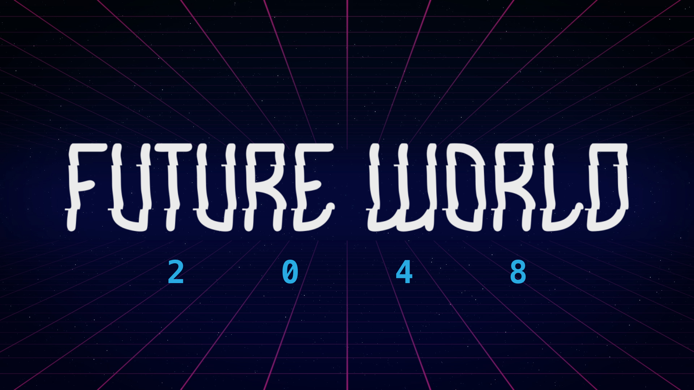

AI runs in this browser. It downloads 258 MiB of model data plus runtime files from this site. No app is installed; chat messages aren’t sent to a server. Imagined replies are red. Visit resets clear chats.